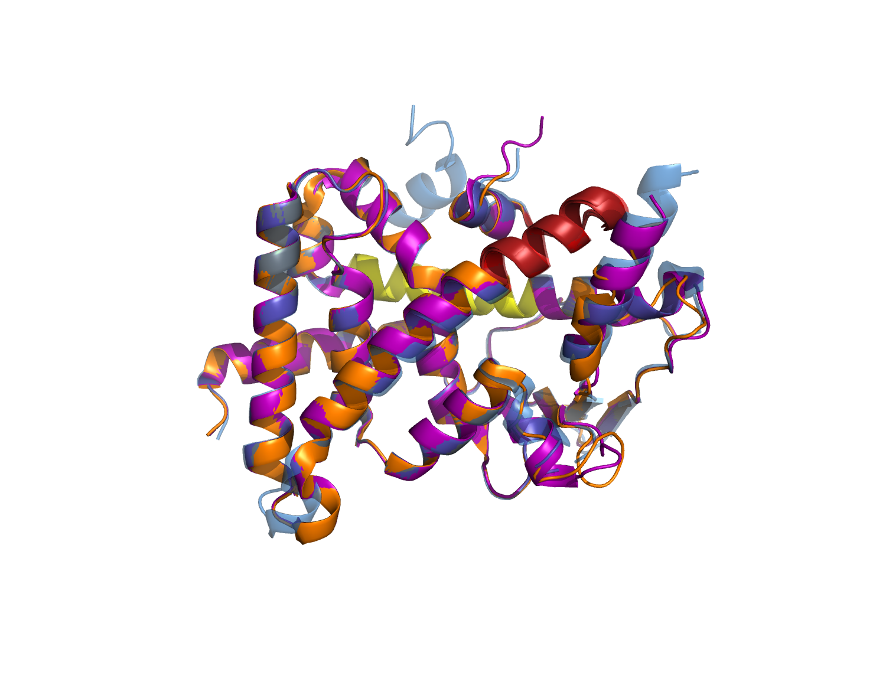
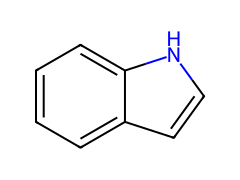
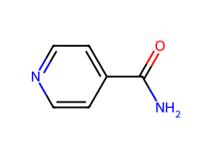
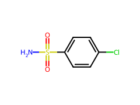
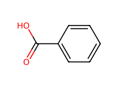
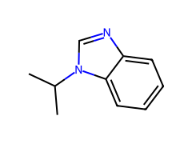
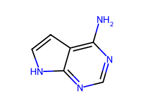
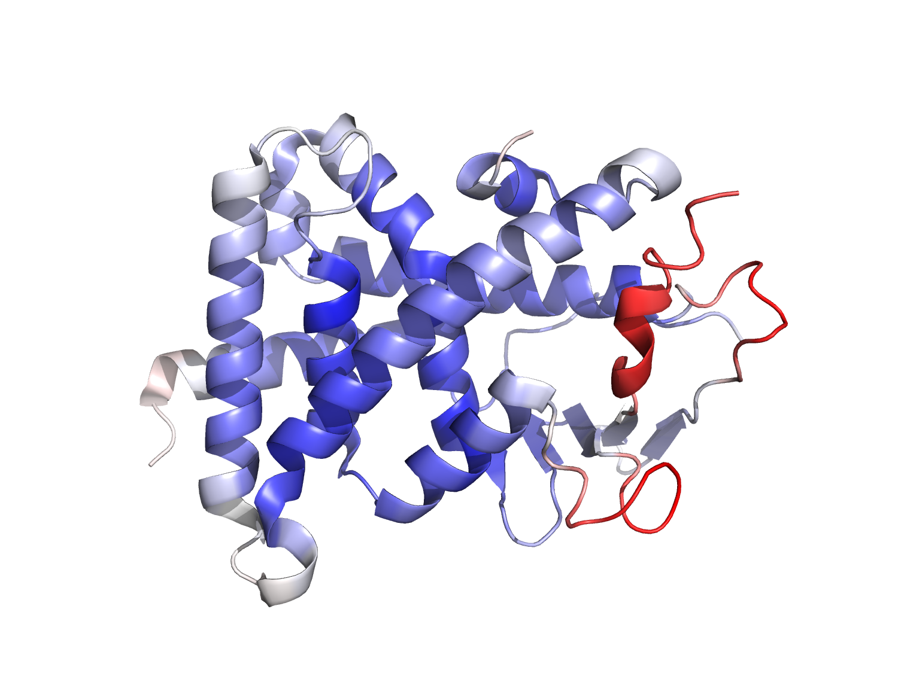

Real deposited crystal structure available and used directly; pocket is the well-characterized orthosteric xenobiotic-sensing site, already flagged for unusually high plasticity in §03.
Source: deposited crystal structure (not predicted). Resolution 2.75 Å, holo form, single LBD chain, space group C2221.
Oligomeric state: monomeric LBD construct (residues 142–434); full-length receptor is monomeric nuclear receptor, DBD+LBD, functions with RXRα heterodimer partner.
Pocket class: orthosteric, xenobiotic-sensing ligand-binding pocket. Known unusually large and plastic — see §03.
Known ligand prior (ChEMBL query): 214 bioactive compounds on record for this target, potency range 40 nM–38 µM, chemically diverse (steroids, statins, antibiotics, herbicide metabolites — consistent with promiscuity).
Crystallization artifacts flagged in pocket: 1 PEG fragment (chain A, resi 501) overlapping candidate site 2 — excluded from hot-spot mapping.
Used the deposited crystal form rather than an AlphaFold prediction — resolution (2.75 Å) and pocket coverage were sufficient, so the structure-prediction and pLDDT-confidence steps were skipped per pipeline rule (real structure > predicted, see §06 for how this changes the confidence appendix).
Three candidate pockets enumerated; one clears the druggability threshold and matches the known ligand-bound volume range.
| Pocket ID | Volume (ų) | Druggability score | Enclosure | Notes |
|---|---|---|---|---|
| Site 1 (orthosteric) | 1,340 | 0.91 | High | Selected — matches known ligand-bound volume range |
| Site 2 | 410 | 0.38 | Medium | Overlaps PEG artifact, deprioritized |
| Site 3 (surface groove) | 190 | 0.19 | Low | Below druggability threshold, excluded |
Site 2's raw volume (410 ų) and enclosure were not disqualifying on their own, but it was deprioritized because the top-scoring subpocket overlapped a PEG cryoprotectant molecule (§01) rather than genuine protein-lined surface — without that overlap its druggability score would likely have cleared threshold. Flagged for re-evaluation if a PEG-free structure becomes available.
Pocket is substantially more plastic than a typical orthosteric site — plasticity score sits well above the ensemble-docking threshold, driven almost entirely by the AF-2 helix and β-sheet lid rather than the core hot spot.
Named flexible elements: AF-2 helix (residues 407–422, repositions on agonist binding); β-sheet lid (residues 245–260, opens to accommodate bulkier ligands).

| Residue | RMSF (Å) | Element |
|---|---|---|
| Leu411 | 2.14 | AF-2 helix |
| Gln285 | 1.87 | β-sheet lid |
| Phe420 | 1.65 | AF-2 helix |
| Met243 | 0.71 | helix 3 |
| Trp299 | 0.44 | core hot spot |
| Tyr306 | 0.39 | core hot spot |
Deviation from defaultPlasticity score (0.52) exceeded the 0.4 ensemble-docking threshold, so ensemble docking was used as the primary strategy for this target instead of the faster rigid-receptor default. This is consistent with this receptor's known behavior as an unusually promiscuous, plastic sensor rather than a typical rigid orthosteric pocket — treat rigid-only results from earlier triage passes on this target as unreliable.
One dominant, rigid apolar hot spot anchors the pocket; two secondary polar/charged anchors sit closer to the flexible AF-2 region and are treated as lower-confidence handles.
Only one core hot spot was retained (rather than the 3–5 typically seen on a less hydrophobic pocket) because the two next-highest-scoring probe clusters both sat on the flexible AF-2 helix (§03) and their apparent "hot spot" signal varied by >40% across ensemble frames — judged noise from the flexible region rather than a real anchor, so they were downgraded to secondary/informational rather than reported as core.
Six fragments passed triage; selection skews toward larger, more hydrophobic character than a standard Rule-of-Three library would prioritize — see reasoning below.
| Site ID | Structure | SMILES | MW | LE | LLE | Score | Key interactions (PLIP) | Conf. |
|---|---|---|---|---|---|---|---|---|
| PXR-x0001 |  | c1ccc2[nH]ccc2c1 | 117 | 0.41 | 4.1 | -6.8 | Trp299 π-stack, Tyr306 H-bond | High |
| PXR-x0002 |  | O=C(N)c1ccncc1 | 122 | 0.38 | 3.6 | -6.1 | Phe288 hydrophobic, His407 H-bond | Med |
| PXR-x0003 |  | Clc1ccc(cc1)S(=O)(=O)N | 205 | 0.29 | 2.8 | -6.4 | Arg410 salt bridge, Trp299 apolar | Med |
| PXR-x0004 |  | c1ccc(cc1)C(=O)O | 122 | 0.33 | 3.9 | -5.9 | Tyr306 H-bond only | Low |
| PXR-x0005 |  | CC(C)n1cnc2c1cccc2 | 160 | 0.31 | 2.2 | -6.6 | Trp299 π-stack, Phe288 hydrophobic | High |
| PXR-x0006 |  | Nc1ncnc2[nH]ccc12 | 135 | 0.27 | 3.3 | -5.7 | His407 H-bond only, AF-2-adjacent | Low |
LE = score ÷ heavy-atom count. LLE = pIC50-equivalent − clogP (estimated). Score = docking ΔG proxy, kcal/mol. Conf. = Conformational Confidence, discounted per §03 for fragments docked against a single rigid structure only.
Deviation from default20 of 28 pocket-lining residues are hydrophobic (unusually high for an orthosteric site), so small polar Rule-of-Three fragments (sub-150 Da, cLogP <1) scored poorly in initial triage — they satisfied the size/polarity rule but made almost no contact with the dominant hot spot (Trp299/Phe288). Fragment ranking was reweighted to tolerate slightly higher MW and lower polarity than the standard cutoff, which is why PXR-x0003 (205 Da, chlorophenyl sulfonamide, the least "rule-compliant" fragment here) still placed above two smaller, more polar fragments — its extra bulk buys real hot-spot contact that the smaller polar fragments could not achieve.
This reweighting is target-specific, not a general library-selection default; a less hydrophobic pocket would have kept the standard Rule-of-Three ranking unmodified.
Structure-quality metrics come from the real deposited crystal; fragment-confidence metrics come from computation only — kept in separate blocks deliberately.
| Resolution | 2.75 Å | Rwork / Rfree | 0.198 / 0.241 |
|---|---|---|---|
| Clashscore | 4.2 (percentile 88) | Ramachandran outliers | 0.2% |
| Pocket-lining altlocs | 2 residues (Leu411, Gln285) | Ligand density (deposited) | n/a — apo pocket |

Confidence tiers reflect docking-score consistency across ensemble frames and PLIP interaction persistence, not real density. No fragment listed in §05 has been synthesized, soaked, or otherwise experimentally confirmed. Treat as a triage ranking for follow-up, not a result.
The two confidence blocks above were kept structurally separate rather than merged into one score, since blending a real experimental metric (Rfree, clashscore) with an unvalidated computational one (docking consistency) would let a high-quality crystal structure silently launder confidence into fragments that have no experimental support of their own.
Two fragments clear both hot-spot engagement and conformational confidence bars; the rest need either more ensemble sampling or should be dropped.